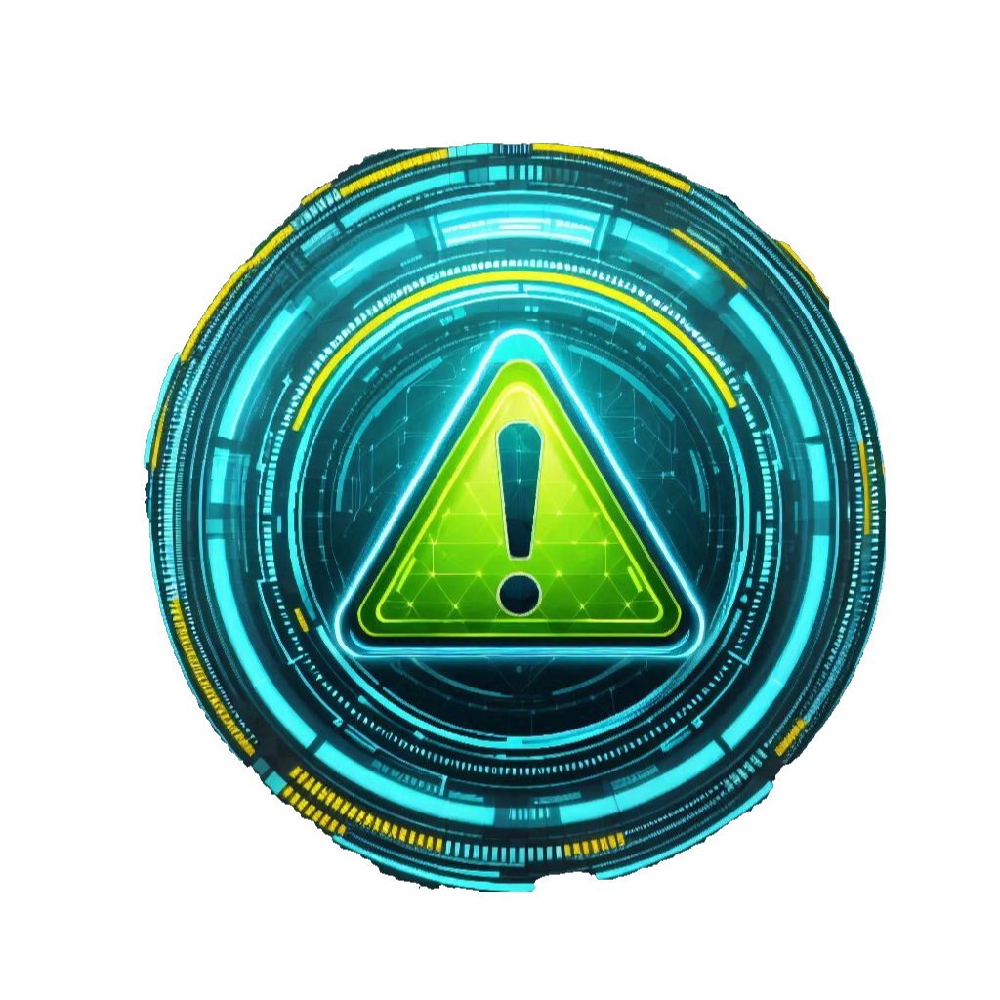

CMMC Compliance Services
Whether you need a formal CMMC assessment or help getting ready for one, TenGuard Security offers the full spectrum of CMMC compliance services — delivered by a Lead Certified CMMC Assessor.

CMMC Level 2 Assessment
As a Lead Certified CMMC Assessor (Lead CCA), Johnny Roye is authorized to lead official CMMC Level 2 third-party assessments. We evaluate your organization against all 110 practices across the 17 CMMC domains and produce the assessment documentation required for certification submission to the Cyber AB.

CMMC Gap Analysis & Readiness Assessment
Before your formal assessment, you need to know where you stand. We conduct a thorough review of your current security practices against all CMMC Level 2 requirements, identify non-compliant or partially-compliant controls, and produce a clear gap report with prioritized remediation recommendations.
CUI Identification & Scoping
One of the most critical — and most overlooked — steps in CMMC preparation is understanding exactly what Controlled Unclassified Information (CUI) you have and where it lives. We help you identify, categorize, and document your CUI, define your assessment boundary, and establish the scope of your CMMC program.
System Security Plan (SSP) Development
A System Security Plan is required for CMMC Level 2 and is the foundational document describing how your organization protects CUI. We develop a thorough, assessor-ready SSP that accurately documents your security controls, system boundaries, and implementation details — built to withstand scrutiny during assessment.
Plan of Action & Milestones (POA&M)
When gaps exist, a Plan of Action & Milestones documents how and when you'll remediate them. We help you build a realistic, credible POA&M that satisfies CMMC requirements and gives assessors confidence that outstanding gaps are being actively addressed with defined timelines and resources.

CMMC Pre-Assessment Review
Before your official C3PAO assessment, a pre-assessment review is one of the best investments you can make. We conduct a structured walkthrough of your controls, documentation, and evidence — the same way an official assessor would — and identify any remaining issues so you can fix them before the assessment counts.
CMMC Training & Awareness
Your people are part of your compliance posture. We provide CMMC-specific training for your employees covering CUI handling, access control, incident reporting, and security awareness — addressing the personnel-related requirements built into CMMC Level 2 while building a security-conscious culture across your organization.

Ongoing Compliance Support
CMMC Level 2 certification is a three-year cycle, and maintaining compliance requires continuous attention. We offer ongoing advisory support to help you manage changes to your environment, stay current with CMMC program updates, prepare for renewal assessments, and respond to security events in a way that protects your certification status.